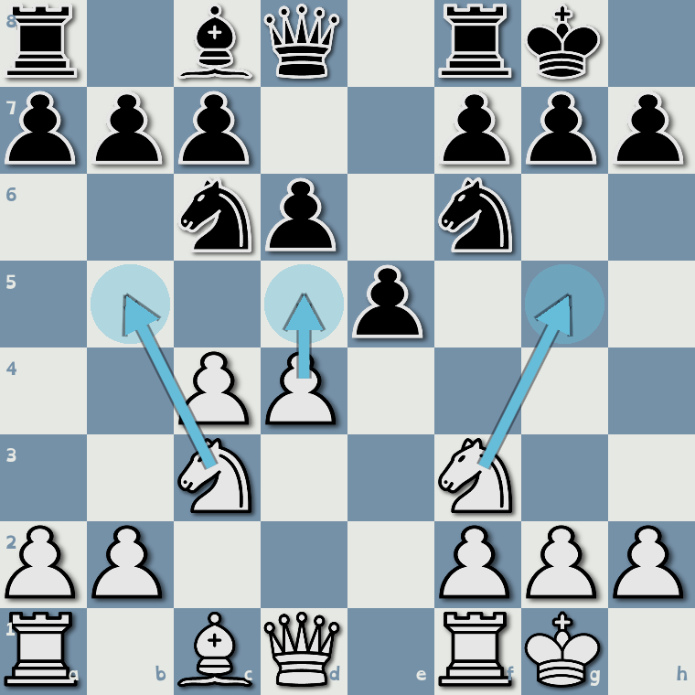
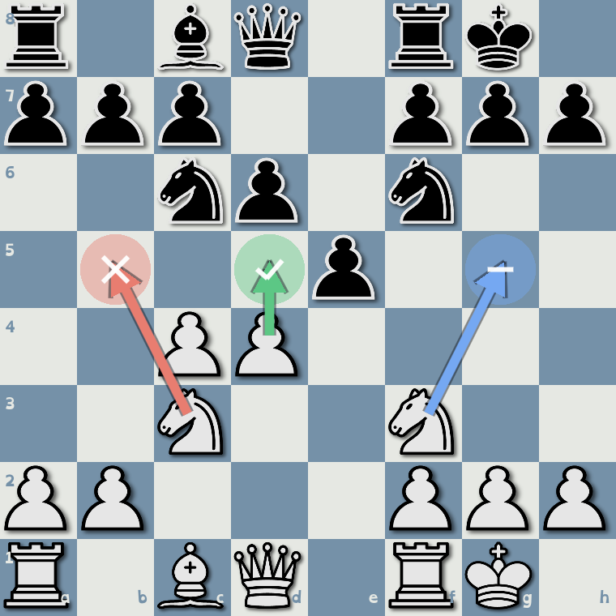
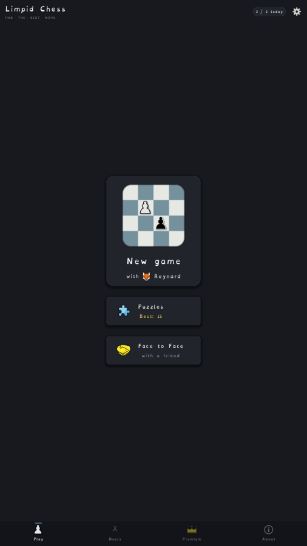
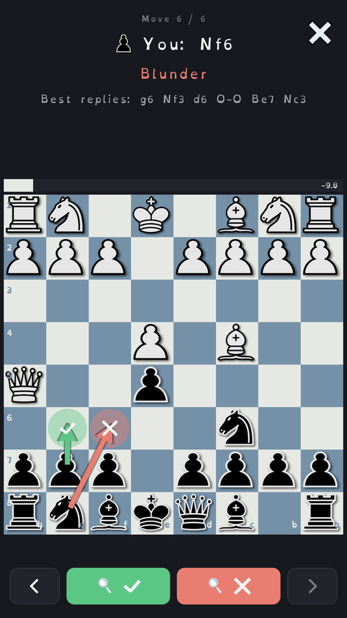
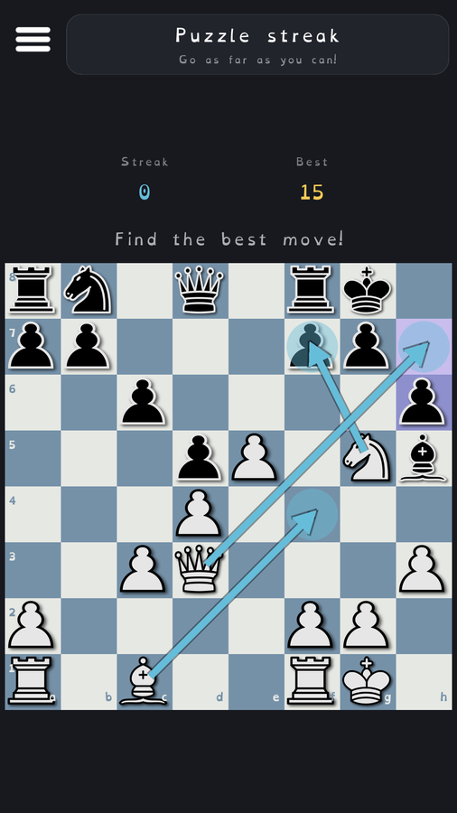
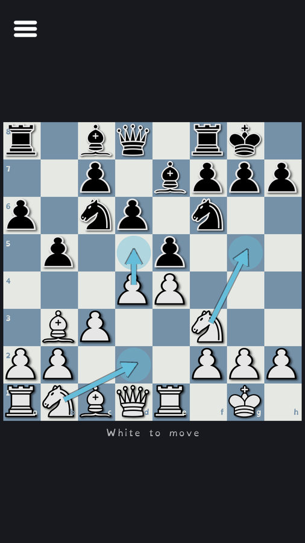
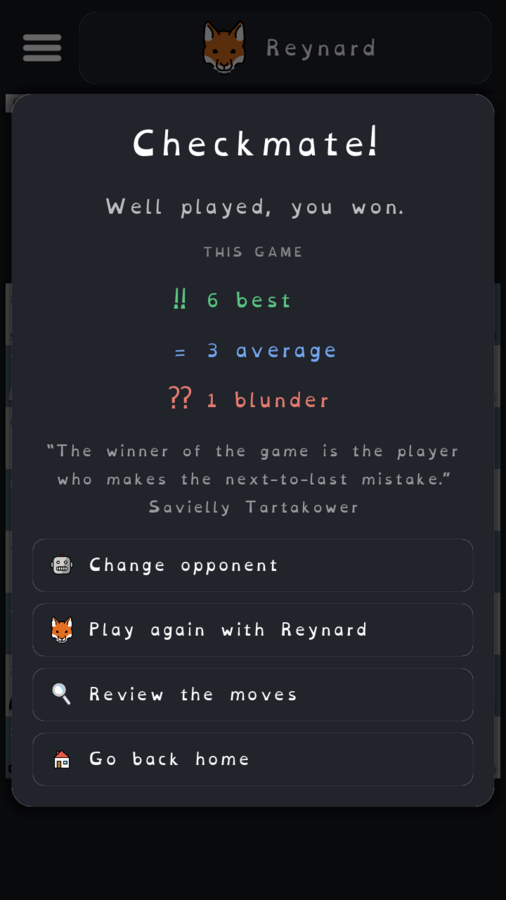

Limpid Chess
A smooth chess game where every turn shows three moves, your job is to find the best one.
Get it on Google Play Android · free, with an optional one-time PremiumMade for people who freeze each turn
Instead of a blank board of thirty legal moves, you get three clear choices and learn to spot the good one.
Three moves, every turn
The best move, a "not bad" move, and a blunder, drawn as plain numbered arrows. You pick; then the colours and a coin reveal how you did.
Smooth, never stuck
No freezing over thirty legal moves. Three clear arrows keep every turn flowing, so you always know where to start.
Puzzles that climb
A rising streak of real puzzles, each still just three moves. Start gentle and see how far up the ladder you can go.
Review every game
Step through afterwards to see the best line, replay exactly where a move went wrong, and watch the evaluation swing. Every game teaches you something.
Grows with you
Opponents from a gentle first-timer to a real challenge, with a relative difficulty meter, not a scary rating. Beatable when you start, tough when you're ready.
Play face to face
Face to Face on one device: sit across from a friend and the pieces turn to whoever is on the move, like a real board between you.
No clocks, no shame
Soft colours, no timers, no punishment for losing. Mistakes are the lesson, not the scolding, so you just keep learning.
Offline, no ads, no accounts
One small save on your device. No tracking, no sign-in, ever. Read the position, find the move, that's it.
How it works
No blank board of thirty options, just three arrows. Pick one, and the answer reveals itself.


See it in action
From your first guided move to reviewing the game, solving puzzles, and playing a friend across the table.




